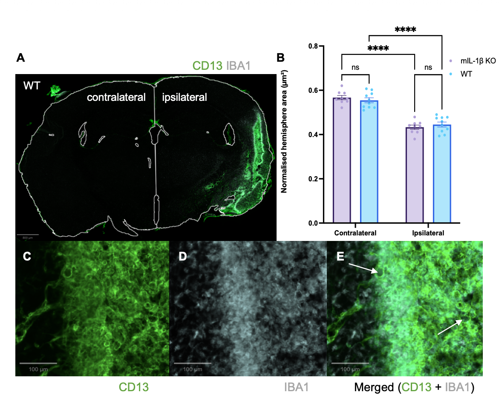

RESEARCH
FINAL-YEAR DISSERTATION
These are some photos and figures from my final-year lab project. My dissertation was titled "Investigating the effect of microglial IL-1beta deletion on foam cell formation and chronic neuroinflammation after ischaemic stroke in mice."

Title of tutorial presentation of my final-year project.

Summary of the aetiology of ischaemic stroke, and how microglia are key players in the neuroinflammation cascade.

Summary of the temporal and functional microglial shift observed after ischaemic stroke in mice.

The confocal image captured of the microglia (IBA1 staining) present in the left side of a coronal section of a mouse brain.

A close-up of the area outlined in the previous confocal image, where the morphology of the microglia is clearer - more amoeboid and more 'foam-cell'-like.

This figure was added to my introduction as a summary of the temporal and morphological development of microglia after ischaemic stroke. It describes the tri-phasic process that has been observed in other neurodegenerative conditions, such as traumatic spinal injury and multiple sclerosis, alongside if these metabolic changes are associated with disease progression or recovery. This information was gathered after a systematic literature review, and indicates that the lipid metabolism is the key process that alters the functionality of the microglia after the injury.

This was the first figure in my results section, showing the confocal staining of the microglia (IBA1) and the myeloid cells (CD13). (A) shows the complete coronal plane of the mouse brain, with the ipsilateral side showing greater microglial activation which was to be expected as this is where the ischaemic injury was induced. (B) shows the statistical comparisons between the ipsilateral and contralateral sides of the multiple brain sections analysed, revealing a significantly decreased hemisphere area in the ipsilateral side compared to the contralateral side, independent of genotype. So the side directly affected by the injury is smaller than the side without direct contact, regardless of the microglial-specific IL-1beta knock-out.

This figure was to show the level of IL-1beta RNA transcript present in the ipsilateral, infarct and foam cell (FC) regions of the separate genotypes over time; ranging from 14- to 56-days post-ischaemia. An intriguing part of the evidence emerges from the wildtype (WT) genotype where the IL-1beta expression increases at 56 days, suggesting that there is an increase of its expression downstream of foam cell formation after approximately 30 days. These results will need to be verified as it is only the mRNA expression, not the true IL-1beta DNA expression.
Skills Developed
Scientific Writing
Literature Review
Critical Analysis
Evidence Synthesis
Final Outcome
I achieved 75% overall which includes the mark for my initial project presentation to my supervisor, my attitudes whilst working in the lab, and feedback on my self-reflective piece at the end of my report. I was grateful to gain to more analytical and hands-on experience with image analysis tools, and to gain exposure to another side of neurodegenerative research.